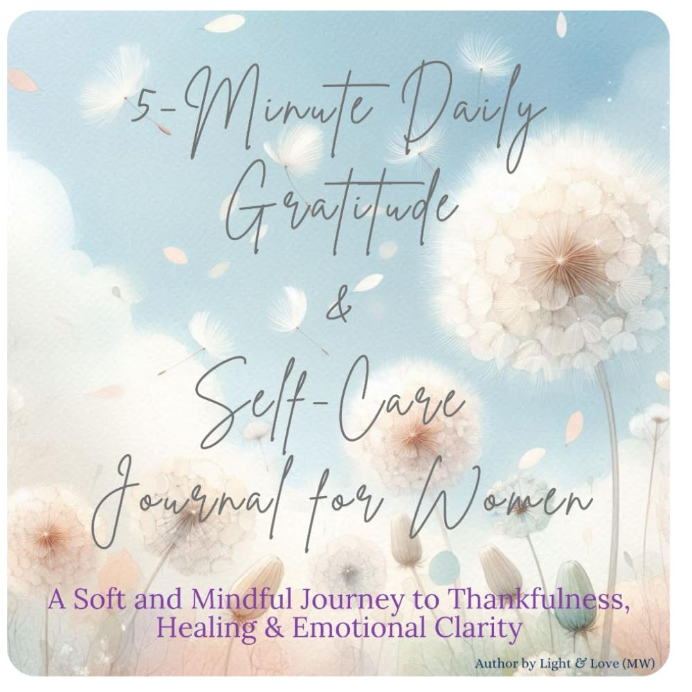

5-Minute Daily Gratitude & Self-Care Journal for Women: A Soft and Mindful Journey to Thankfulness, Healing & Emotional Clarity: Guided Prompts for ... Reflections with Elegant Floral Pages
by Light & Love (MW)

Take a gentle pause each day and reconnect with your heart. This beautifully designed 5-Minute Daily Journal features soft floral illustrations and calming prompts to help you reflect, grow, and feel grounded. Whether you're practicing gratitude, tracking your emotions, or setting intentions, this journal offers a peaceful space just for you. What’s Inside: 80 guided prompts for emotional awareness, thankfulness &…
Paperback · 81 pages